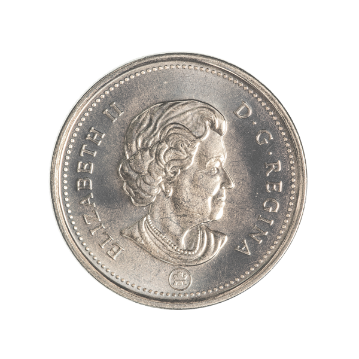
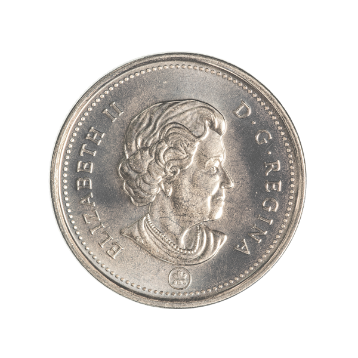

Канадский лос
Артикул:146885-972
Гросглоккнер — самая высокая гора Австрии, 3798 м. Расположена на границе Каринтии и Восточного Тироля. Гора имеет две вершины — Гросглоккнер и Клайнглоккнер (3770 м). У её подножья расположен самый крупный ледник Австрии — Пастерце.
На аверсе вверху полукругом название серии: MOUNTAINS & FLORA, ниже изображены горы, произрастающие на альпийских лугах цветы (нанесенные методом тампонной печати). Монета укомплектована подарочным демонстрационным футляром.
Цена:2 430 ₽
| Год | 2009 |
| Номинал на монете, ед. нац. валюты |
5 Доллар США |
| Страна-эмитент | Республика Палау |
| Качество чеканки | PR |
| Металл | Серебро |
| Масса хим. драгоценного металла в монете, гр | 25 г. |